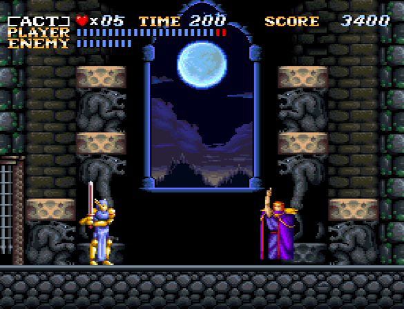
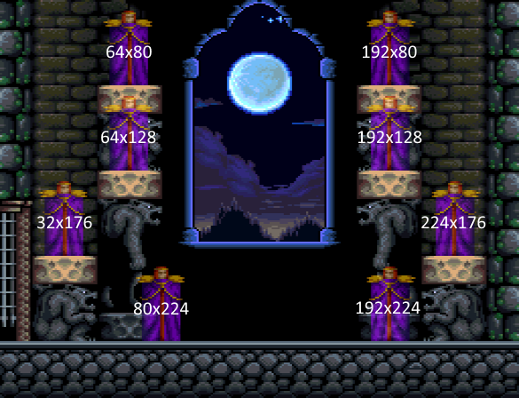
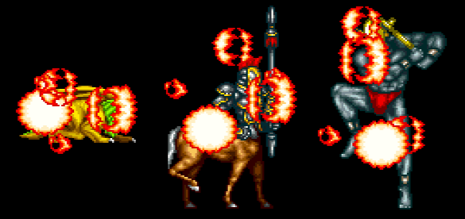

2019-09-17
Recently I've been enjoying MetroidMcfly's professional mode speedruns of ActRaiser. Professional mode takes out the sim parts and leaves the action stages, making an otherwise hourlong run take just over twenty minutes to complete. Areas which used to be simple inconveniences can turn into real problems as they now make up a bigger part of the run! We'll be examining such an area here.
Five minutes into the run you encounter the teleporting wizard known as Zeppelin Wolf. The wizard will teleport around to the various platforms and perform his attacks and, upon dropping below half health, transform into a werewolf and mindlessly walk towards you. Given the right set of teleport patterns it is possible to finish off the boss before he transforms though, making the fight much faster!
Mcfly was lamenting the fact that so much time was at mercy to where the wizard was teleporting - to the game's RNG. But is he truly random? Can we perhaps manipulate his position?
Below are the positions and x/y coordinates the boss can teleport to:
Ideally we want him to teleport to the low/middle platforms to be able to deal sufficient damage; left/right is is inconsequential. Let's take a look at the subroutine that determines where the boss will appear.
Select_location()
array x_values_left = { 80, 32, 64, 64} // each column represents a left/right + height pair
array x_values_right = {192, 224, 192, 192}
array y_values = {224, 176, 128, 80}
index = Random_value() % 4 //get a random value, range = 0-3
if(player_x < 128)
{
boss_x = x_values_right[index] //if player is on the left half of the screen
}
else
{
boss_x = x_values_left[index] //player is on right half
}
boss_y = y_values[index]
return
Pseudocode representation of the original assembly code
The screen / playfield is 256 pixels wide, so checking if the player's X position is above or below 128 determines which side of the screen the player is on. From there the boss will simply choose the opposite side of the player (picking an X value that matches the Y value).
For the Y value however, it is directly using the returned value from the random number generator function to pick a height. From the boss's perspective, this process is completely random. But is it truly random...?
The boss gets a height value based on the Random_value() subroutine. What does it do?
array rng_state[16] //zero initialized on console reset Random_value() carry = 0 for(x = 14; x >= 0; x--) { adc_result = rng_state[x] + rng_state[x+1] + carry rng_state[x] = adc_result & 0xFF //clamp result to 8 bits carry = adc_result >> 8 //set carry to the 9th bit of the result } for(x = 15; x >= 0; x--) { if(++rng_state[x] != 0) break //avoid zero states } return rng_state[0] //return first byte of rng state array rng_state array contents: 00 00 00 00 00 00 00 00 00 00 00 00 00 00 00 00 | initial state 00 00 00 00 00 00 00 00 00 00 00 00 00 00 00 01 | state after 1st call. returned 0 01 01 01 01 01 01 01 01 01 01 01 01 01 01 01 02 | 11 10 0F 0E 0D 0C 0B 0A 09 08 07 06 05 04 03 03 | 99 88 78 69 5B 4E 42 37 2D 24 1C 15 0F 0A 06 04 | CC 32 AA 31 C8 6D 1E DC A5 78 54 38 23 14 0A 05 | state after 5th call. returned CC Pseudocode representation of the original assembly code
Note: this function technically returns both rng_state[0] and rng_state[1] as one 16-bit value. I'm somewhat confident this is simply a shortcut by the developers however, and rng_state[1] isn't meant to be used.
The random number generator bears similarities with the Add-with-carry (AWC) random number generator, which itself is a modification of the Lagged Fibonacci Generator (LFG). That's cutting edge considering the game was released close to when the AWC was first proposed!
These are pseudo random number generators; they are deterministic by nature. True randomness in computing is a rather complicated topic and besides, PRNGs are perfectly fine when used correctly.
Speaking of using things correctly, the RNG state is initialized to all zeroes when starting the game! The RNG function does have zero state prevention by incrementing the array after going through the add-with-carry part... however, it's quite common for a game to either:
1) continually run the RNG function every or every few frames, or
2) rapidly call the RNG function early on in the game, essentially seeding the RNG to achieve good randomness.
So that's the initial RNG state. I then made a TAS recording up til the boss, mimicking Mcfly's movement to see what called the RNG... turns out it is only used for one thing: to create the explosion effects when killing bosses!
Maybe they never ran into poor randomness even without proper seeding - after all, it's barely used in the action stages.
The only thing the RNG is used for before Zeppelin Wolf.
So while the RNG is called several times to place the explosions, it is always the same amount every time - this seems great! I think we can work with this!
But I soon realized I overlooked a crucial detail... the two lowest bytes of the RNG state gets replaced with the global frame timer on screen transitions!
I even knew about this, but in the moment of excitement I completely forgot about it. The game starts incrementing a 16-bit timer every frame shortly after the system is powered on or reset. This is of course the reason the boss won't take the same action every time, even though RNG state is otherwise updated identically every run.
There is one odd fact to point out about the global frame timer - while you can start a run on any given frame, entering doors appears to only happen every other frame. Since the "frame counter to RNG state" transfer only happens every other frame, the value sent to the RNG state is going to be always odd or always even depending on when you pressed start in the menu.
Well then. Zeppelin Wolf's action depends on when you enter his room on a 2 frame basis! Even though it's just the tail end of the RNG state that changes, even though 14/16 array elements are going to be the same every time, it's enough to thwart any real attempts at manipulations. A very skilled player, such as Mcfly, could even make it there within the same 256 frame window so the high byte of the timer is always the same, making the RNG have 15/16 known elements but still not force a good outcome. You could potentially deduce his next position after seeing the first teleport, at best.
Going back to Select_Location() we can see that the x/y position array index is a "random" value modulo 4.
Let's say you enter the boss door when the timer is 0x61F8, which will produce the random value 0xCA for the first teleport. Entering 2 frames later would yield 0xCC, another 2 frames 0xCE and so on. It's always going to be an even value until the high byte of the frame timer increments (every 256 frames).
What that means is that the boss can only choose 2 actions out of the 4 available depending on when start was pressed in the menu: top(bad) / low(good) or middle(good) / ground(bad).
So... it's a 50/50 if you get a 50% success rate or... a 50% success rate for the first teleport. Well, that changes nothing!
So is Zeppelin Wolf random? I'd say yes, but it's teetering on the edge of not being though!
Ultimately, I don't see a way of guaranteeing good patterns every time.